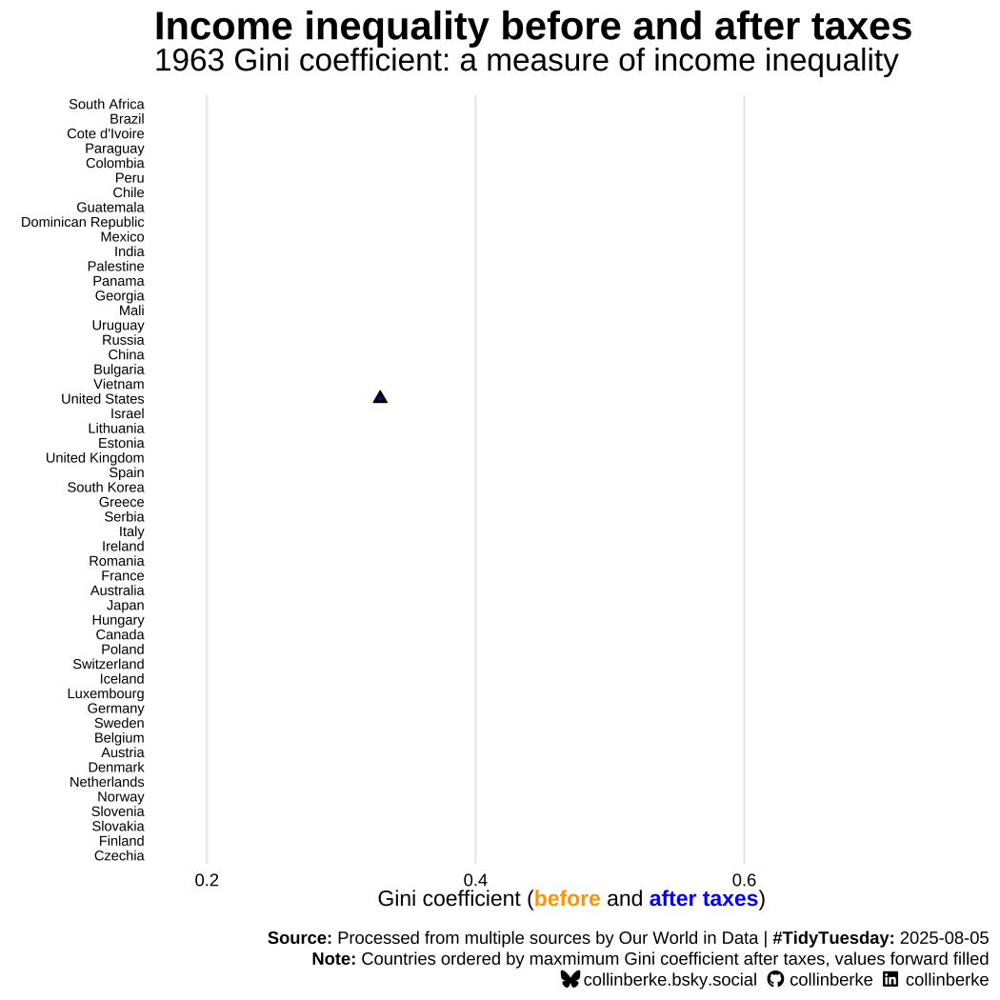

# Setup -----
library(tidyverse)
library(tidytuesdayR)
library(berkeBrand)
library(here)
library(glue)
library(skimr)
library(janitor)
library(ggalt)
library(ggtext)
library(gganimate)
# Get data -----
# `gini_mi_eq` = pre-tax inequality
# `gini_dhi_eq` = post-tax inequality
# data-import-income-inequality
tuesdaydata <- tt_load('2025-08-05')
income_inequality_processed <-
tuesdaydata$income_inequality_processed |>
clean_names()
# Explore data -----
# data-explore
names(income_inequality_processed)
glimpse(income_inequality_processed)
skim(income_inequality_processed)
# Questions to explore:
# * How many countries are represented in the data?
# * How many data points (i.e., years) are available for each country?
# * Range of data points per country?
# * Over what years does this data represent?
# data-questions
# Countries?
income_inequality_processed |>
distinct(entity) |>
count()
# Data points?
data_points <- income_inequality_processed |>
group_by(entity) |>
count(sort = TRUE) |>
print(n = 100)
# Per country?
range(data_points$n)
# What country(s) only has one?
# The Dominican Republic
data_points |> filter(n == 1)
# Years represented?
# 1963 to 2023 for some countries, not all
range(income_inequality_processed$year)
# Transform data -----
# trnsfm-inequality-data
data_income_inequality <- income_inequality_processed |>
arrange(entity, year) |>
complete(entity, year = 1963:2023) |>
group_by(entity) |>
fill(gini_mi_eq, gini_dhi_eq) |>
mutate(diff = gini_mi_eq - gini_dhi_eq)
## An animated dumbell chart -----
# plot-text
title <- "<strong>Income inequality before and after taxes</strong>"
subtitle <- "{closest_state} Gini coefficient: a measure of income inequality"
caption <- glue(
"<br>",
add_tt(
source = "Processed from multiple sources by Our World in Data",
tt_date = "2025-08-05"
),
"<br>",
"<strong>Note:</strong> Countries ordered by maxmimum Gini coefficient after taxes, values forward filled",
"<br>",
add_socials()
)
x <- glue(
"Gini coefficient",
"(<span style = 'color: orange;'><strong>before</strong></span>",
"and <span style = 'color: blue;'><strong>after taxes</strong></span>)",
.sep = " "
)
y <- ""
## Static chart -----
# I found this useful because the rendering of the animation can take some time.
# Having this static plot allowed for faster iteration.
# vis-dumbell-chart-ggplot2
vis_income_inequality <- ggplot(
data = data_income_inequality
) +
geom_segment(
aes(
x = gini_mi_eq,
xend = gini_dhi_eq,
y = reorder(entity, gini_dhi_eq, max, na.rm = TRUE),
yend = reorder(entity, gini_dhi_eq, max, na.rm = TRUE)
),
color = "darkgrey",
linewidth = .5
) +
geom_point(
aes(x = gini_mi_eq, y = reorder(entity, gini_dhi_eq, max, na.rm = TRUE)),
size = 2,
fill = "black",
shape = 24
) +
geom_point(
aes(x = gini_mi_eq, y = reorder(entity, gini_dhi_eq, max, na.rm = TRUE)),
size = 1,
fill = "orange",
shape = 24
) +
geom_point(
aes(x = gini_dhi_eq, y = reorder(entity, gini_dhi_eq, max, na.rm = TRUE)),
size = 2,
fill = "black",
shape = 24
) +
geom_point(
aes(x = gini_dhi_eq, y = reorder(entity, gini_dhi_eq, max, na.rm = TRUE)),
size = 1,
fill = "blue",
shape = 24
) +
theme_minimal() +
labs(
title = title,
subtitle = subtitle,
caption = caption,
y = "",
x = x
) +
theme(
plot.title = element_textbox_simple(size = 20),
plot.subtitle = element_text(size = 16, hjust = 0),
plot.caption = element_textbox_simple(halign = 1, vjust = -5),
panel.grid.minor = element_blank(),
panel.grid.major.y = element_blank(),
axis.text.y = element_text(size = 7, color = "black"),
axis.text.x = element_text(color = "black"),
axis.title.x = element_textbox_simple(halign = .5)
)
ggsave(
here(
"blog/posts/",
"2025-08-10-post-tidy-tuesday-2025-08-05-income-inequality-before-and-after-taxes",
"vis-income-inequality-dumbell.png"
)
)
# func-get-dumbell-chart
get_dumbell_chart <- function() {
vis_income_inequality
}
# vis-animation-transitions
timelapse_income_inequality_dumbell <- get_dumbell_chart() +
transition_states(year, transition_length = 3, state_length = 5) +
ease_aes("quadratic-in-out", interval = 1)
# vis-animate-visualization
animated_income_inequality_plot <- animate(
timelapse_income_inequality_dumbell,
nframes = 125,
duration = 45,
start_pause = 5,
end_pause = 5,
height = 7,
width = 7,
res = 150,
units = "in",
fps = 10,
renderer = gifski_renderer(loop = TRUE)
)
anim_save(
here(
"blog/posts/",
"2025-08-10-post-tidy-tuesday-2025-08-05-income-inequality-before-and-after-taxes",
"vis-income-inequality-dumbell.gif"
),
animated_income_inequality_plot
)TidyTueday contribution: 2028-08-05
data visualization
tidytuesday
Income Inequality Before and After Taxes
Background
This week’s TidyTuesday included data exploring Income Inequality Before and After Taxes. The article “Income inequality before and after taxes: how much do countries redistribute income?” by Joe Hasell inspired this week’s data. The data were processed by Our World in Data, and they orignated from various sources (see the documentation for more info).
The data provides an estimate called the Gini coefficient for both before and after taxes. Here’s the definition:
The Gini coefficient measures inequality on a scale from 0 to 1. Higher values indicate higher inequality. Inequality is measured here in terms of income before and after taxes and benefits.
My contribution
Here is my contribution for the week of 2025-08-05:

The code I used to produce this animated plot follows.
You can also access the code via my TidyTuesday GitHub repository here.
Here is the code for this specific contribution.
If you like what you see or want to discuss this week’s contribution, follow and connect with me in these places:
- BlueSky: collinberke.bsky.social
- GitHub: collinberke
- LinkedIn: @collinberke
The code
Reuse
Citation
BibTeX citation:
@misc{berke2025,
author = {Berke, Collin K},
title = {TidyTueday Contribution: 2028-08-05},
date = {2025-08-10},
langid = {en}
}
For attribution, please cite this work as:
Berke, Collin K. 2025. “TidyTueday Contribution:
2028-08-05.” August 10, 2025.